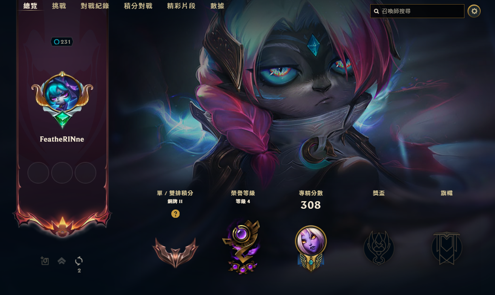
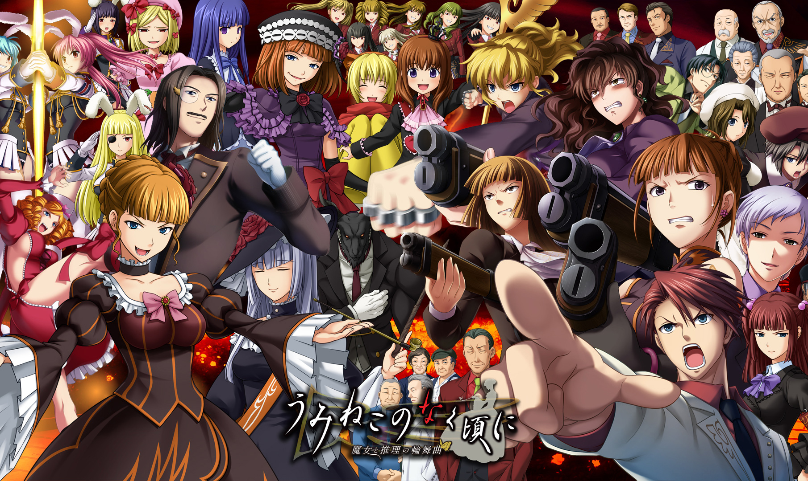
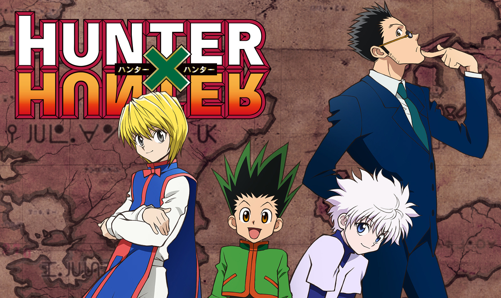
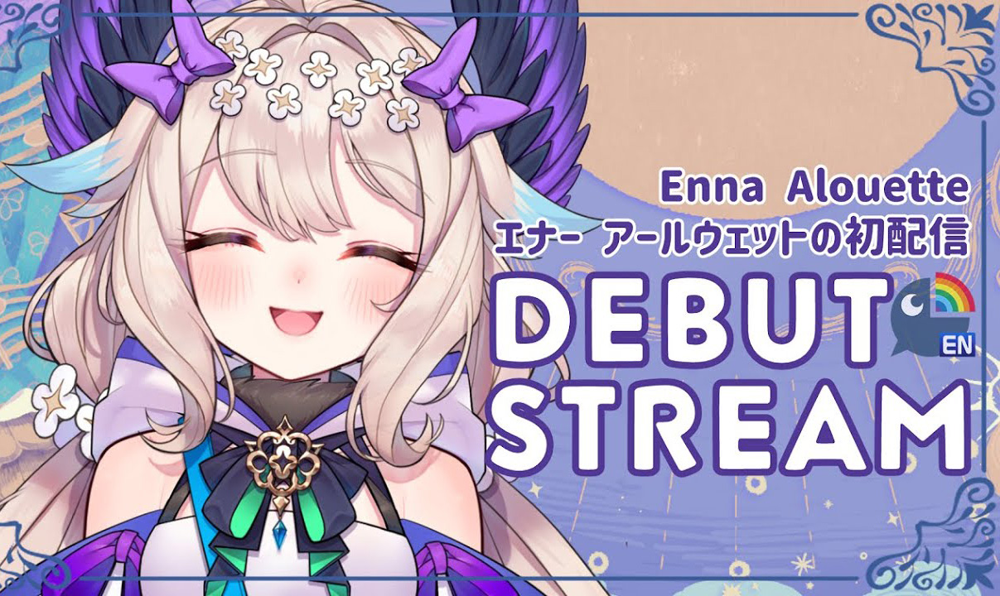
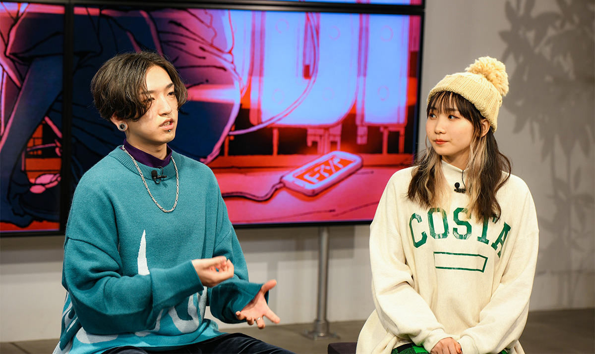
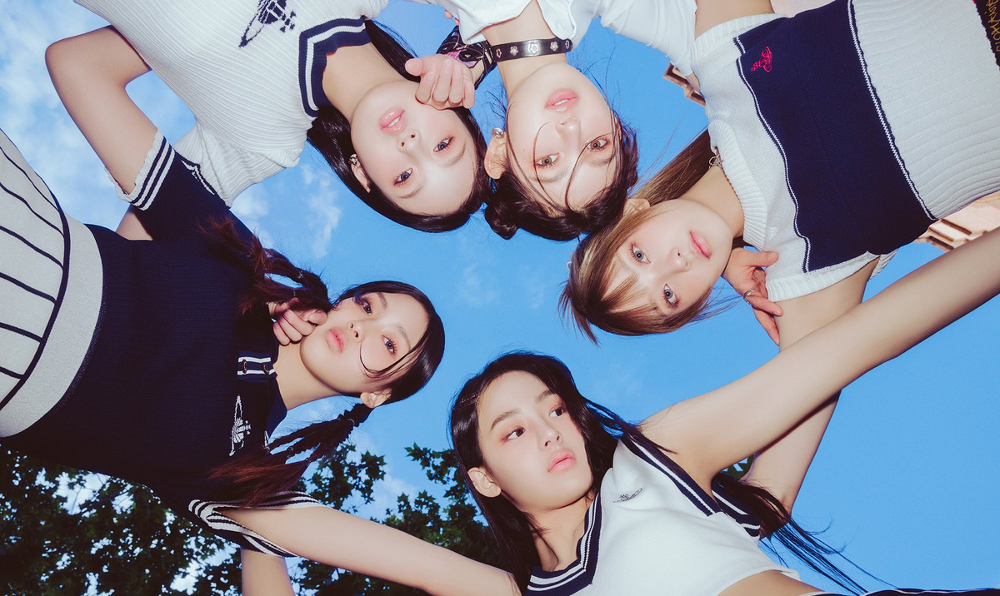

簡嘉慧


—
中原大學 資訊管理學系
2004 / 07 / 27
努力保持自律的宅系女子，喜歡玩遊戲、看動漫和唱歌，
最喜歡的角色是比司吉！（雖然照片是奇犽）
"We may get lost in life,
but never forget where you are."
簡嘉慧
—
中原大學 資訊管理學系
2004 / 07 / 27
努力保持自律的宅系女子，喜歡玩遊戲、看動漫和唱歌，
最喜歡的角色是比司吉！（雖然照片是奇犽）
"We may get lost in life,
but never forget where you are."
專業技能 | Professional Skill
HTML - 74%
CSS - 80%
Java - 67%
Python - 70%
文書處理 - 70%
平面設計 - 80%
個人經歷 | Experience
|
大一上學期 — 企業概論 這堂課和組員一起努力賣餅乾～ |
||
|
大一下學期 — 管理學 和組員們一起到內壢國中服務， |
||
|
大二上學期 — 食字路口工人 第一次當工人，因為想改變自己無聊的大學生活就嘗試參加， |
||
|
大二上學期 — 小運會工人 負責當闖關的關主， |
我的興趣 | Hobbies
|  |
英雄聯盟 League of Legends 都玩輔助或中路，從 S6 開始玩到現在 S13。 |
|  |
海貓鳴泣之時 說它是遊戲，它其實更像是電子小說， |
|  |
獵人 HUNTER X HUNTER 非常經典的作品，最喜歡友克鑫篇，覺得蟻王篇最感動。 |
|  |
Enna Alouette NIJISANJI EN 的女子成員，設定是一隻天堂鳥。 |
|  |
YOASOBI 高一就開始聽他們的歌，最喜歡的歌是出道作《夜に駆ける》 |
|  |
NewJeans 韓國女子組合，平均年齡17歲。 |